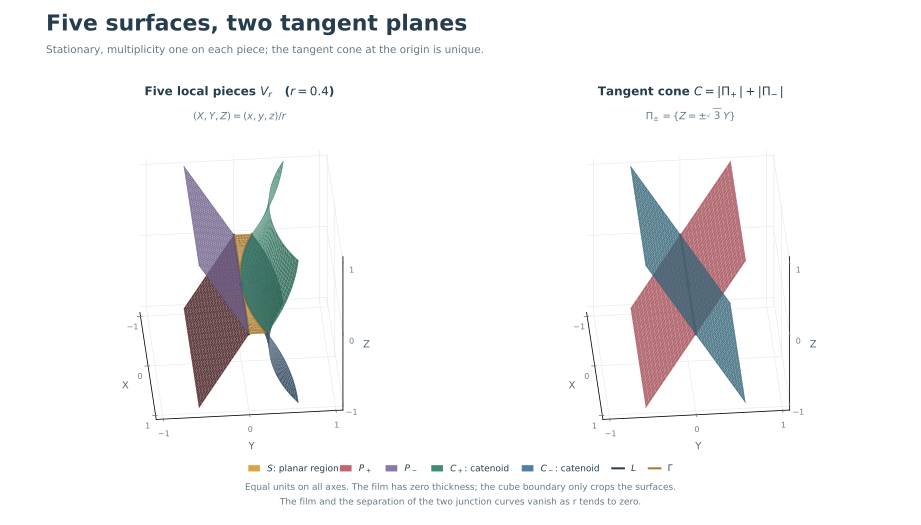

Five exact local pieces
Drag to rotate · scroll to zoom · equal axis scales

The interactive figure is unavailable. This static image shows the example and its tangent cone.
L = {y=z=0}Γ: x²+(y−1)²=1, z=0O = (0,0,0)
Drag to rotate · scroll to zoom · equal axis scales

The interactive figure is unavailable. This static image shows the example and its tangent cone.